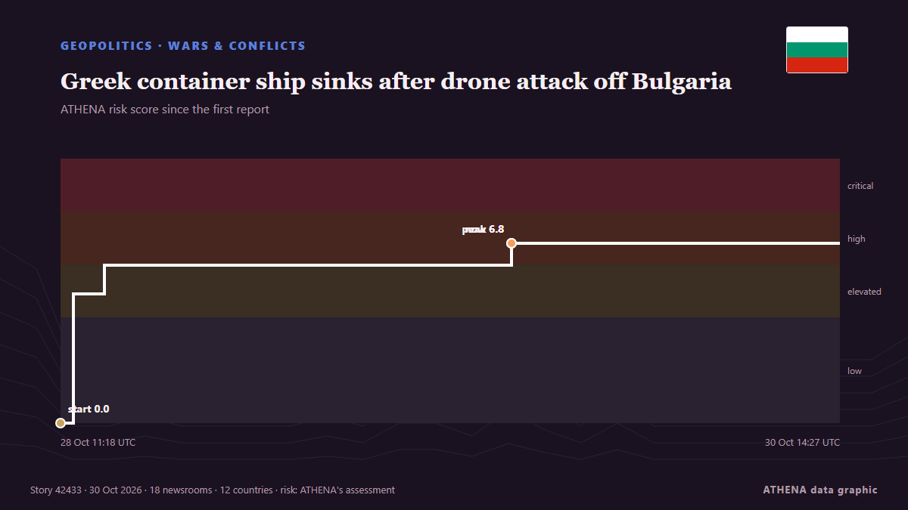

Greek container ship sinks after drone attack off Bulgaria

A Greek container ship has sunk after being hit by naval drones off Bulgaria on Wednesday, the Bulgarian government said, in the latest of a series of strikes on ships in the western Black Sea this… de Cyprus Mail
Informado de forma independiente por 20 medios de 12 países desde el 28 oct; el primero fue Novinite; la cobertura va perdiendo fuerza. ATHENA califica el riesgo como elevado (5.5/10), sobre todo por la gravedad del daño descrito y su alcance geográfico y sectorial. La confianza es del 88 % (alta): lo corroboran 20 medios independientes, con una fiabilidad media de las fuentes del 77 %. Medios por país: Bulgaria (8), Estados Unidos (5), Grecia (4). Cobertura: del 28 oct al 30 oct, 51 horas.
Por qué importa: Por el mar Negro salen el grano ucraniano y ruso y el crudo ruso; los ataques con drones y misiles a puertos y barcos y las minas lo convierten en uno de los mares más arriesgados.
Qué ha cambiado: 13 informaciones nuevas de 11 redacciones en las 24 horas hasta el 30 oct.
Primer titular: Drones strike a container ship off Bulgaria's Black Sea coast and its crew members are rescued
Los titulares se muestran en inglés, tal como se publicaron.
De un vistazo
Seleccionado, puntuado y redactado por la metodología publicada de ATHENA. Ningún editor interviene en eventos concretos. Cómo se elabora ›
| 28 Oct 11:10 UTC | 5 |
|---|---|
| 28 Oct 13:10 UTC | 4 |
| 28 Oct 15:10 UTC | 0 |
| 28 Oct 17:10 UTC | 0 |
| 28 Oct 19:10 UTC | 1 |
| 28 Oct 21:10 UTC | 0 |
| 28 Oct 23:10 UTC | 0 |
| 29 Oct 01:10 UTC | 0 |
| 29 Oct 03:10 UTC | 0 |
| 29 Oct 05:10 UTC | 2 |
| 29 Oct 07:10 UTC | 0 |
| 29 Oct 09:10 UTC | 3 |
| 29 Oct 11:10 UTC | 4 |
| 29 Oct 13:10 UTC | 1 |
| 29 Oct 15:10 UTC | 6 |
| 29 Oct 17:10 UTC | 2 |
| 29 Oct 19:10 UTC | 0 |
| 29 Oct 21:10 UTC | 3 |
| 29 Oct 23:10 UTC | 0 |
| 30 Oct 01:10 UTC | 0 |
| 30 Oct 03:10 UTC | 0 |
| 30 Oct 05:10 UTC | 0 |
| 30 Oct 07:10 UTC | 0 |
| 30 Oct 09:10 UTC | 0 |
| 30 Oct 11:10 UTC | 0 |
| 30 Oct 13:10 UTC | 1 |
| 28 Oct 11:18 UTC | 0.0 |
|---|---|
| 28 Oct 12:10 UTC | 4.9 |
| 28 Oct 14:11 UTC | 6.0 |
| 29 Oct 16:54 UTC | 6.8 |
| 30 Oct 14:27 UTC | 5.5 |
Por qué estas cifras
Importancia
Riesgo
Confianza
La cobertura: quién informó y cuándo
titular tal como se publicó · abre el original- Novinite · BulgariaThree Naval Drones Hit Liberian-Flagged Ship in Black Sea Near Bulgaria
- BTA (English) · BulgariaContainer Ship Struck by Three Maritime Drones off Shabla
- Xinhua (English) — page reader · ChinaMerchant ship attacked by drones near Bulgaria: minister
- The Straits Times · SingapurDrones hit container ship off Bulgaria, crew safe and ashore
- Euractiv · BélgicaBulgaria boosts defences as drones strike another Black Sea ship
- Novinite · BulgariaAll 18 Crew Members Rescued After Black Sea Drone Attack Near Bulgaria
- AzerNews · AzerbaiyánThree naval drones attack container ship in Black Sea
- Turkish Minute · TurquíaTurkey calls for halt to Black Sea ship attacks after fresh drone strike: report
- Novinite · BulgariaBlack Sea Drone Attack Near Bulgaria: 18 Crew Rescued as Hazardous Containers Drift
- ABC News (International) · Estados UnidosDrones strike a container ship off Bulgaria's Black Sea coast and its crew members are rescued
- Naftemporiki (English) · Grecia18 crew members rescued from Greek-owned CONTSHIP JET after drone attack
- BTA (English) · BulgariaDrones that Struck Container Ship in the Black Sea Came from East - Chief of Defence
- The Straits Times · SingapurGreek container ship sinks after drone attack off Bulgaria, all crew members rescued
- Naftemporiki (English) · GreciaGreek-owned containership sinks off Bulgaria after attack by three sea drones
- Greek City Times · GreciaDrone-Hit Greek Ship Contship Jet Sinks Off Bulgaria, Crew Safe
- Cyprus Mail · ChipreGreek container ship sinks after drone attack off Bulgaria
- Anadolu Agency (English) · TurquíaBulgarian defense chief says drones that hit ship in Black Sea came from East
- to vima · GreciaDrone-Hit Container Ship Sinks Off Bulgaria’s Black Sea Coast
- The Straits Times · SingapurGreek PM calls for global maritime truce after ship sunk in Black Sea drone attack
- BTA (English) · BulgariaSofia Military Prosecution Opens Investigation into Drone Attack on Liberian-Flagged Ship in Black Sea
- Al-Monitor · Estados UnidosGreek PM calls for global maritime truce after Greek ship sunk in drone attack
- Arab News · Arabia SaudíGreek PM calls for global maritime truce after Greek ship sunk in drone attack
- The Maritime Executive · Estados UnidosZim Confirms Loss of Containership Attacked in Black Sea off Bulgaria
- Haaretz (English) · IsraelZIM-chartered ship sinks in Black Sea after drone attack off Bulgarian coast
- gCaptain · Estados UnidosGreek Containership Sunk by Naval Drones Off Bulgaria as Black Sea Attacks Escalate
- Novinite · BulgariaSea Drone Attack on CONTSHIP JET Captured on Video
- Novinite · BulgariaShip Sinks After Drone Strike in Bulgaria's Economic Zone as Defense Chief Says "It Came from the East"
- Fortune · Estados Unidos‘The logic points in that direction’: Drones strike a container ship off Bulgaria as attacks on NATO’s Black Sea flank pile up
- France 24 English · FranciaBlack Sea shipping under growing threats as drones hit container ships